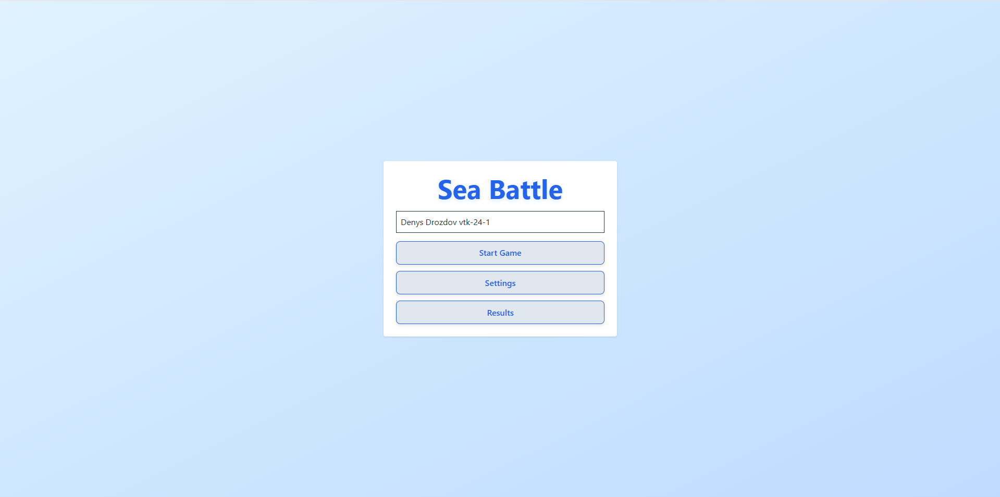
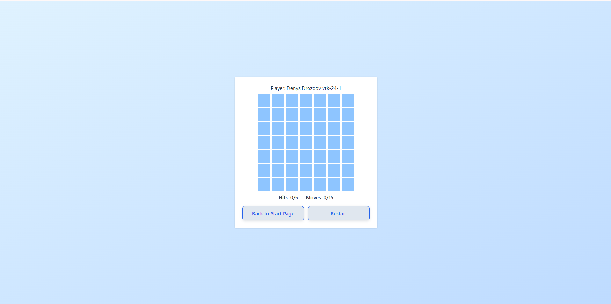

Sea Battle Game Documentation - v0.0.0
Sea Battle Game (React + Vite + TypeScript)

Опис проєкту
Простий браузерний варіант гри Морський Бій, реалізований на React з використанням:
- Vite як bundler
- TypeScript для типізації
- Tailwind CSS для стилізації
- React Hook Form для налаштувань гри
- Zustand для глобального стану гри
Проєкт розбитий на п’ять логічних кроків:
Кроки реалізації
1. Каркас застосунку
- Створено базові сторінки: Start, Game, Results.
- Початкові стани та плейсхолдери для компонентів.
- Структура проекту дозволяє легке перевикористання компонентів.
2. Основна логіка гри
- Додані кастомні хуки для управління станом гри (
useGame).
- Кожен компонент залишився максимально чистим.
- Реалізація базового процесу ходів:
fire, restart.
3. Налаштування гри
- Реалізована форма налаштувань з React Hook Form та валідацією.
- Налаштування включають: складність, розмір дошки, максимальну кількість ходів.
- Додано портал для GameOverModal, який показує завершення гри та варіанти перезапуску або переходу до результатів.
4. Стилізація та роутинг
- Використано Tailwind CSS для стилізації компонентів та гри.
- Реалізовано динамічний роутинг через React Router з підтримкою
userId.
- Структура проекту дозволяє легке додавання нових сторінок.
5. Глобальний стан
- Використано Zustand для управління глобальним станом: налаштування гри, результати користувачів.
- Логіка гри інтегрована з глобальним state.
- Зберігання результатів гри та налаштувань у localStorage.
Скриншот гри

Запуск проекту
# Встановити залежності
npm install
# Запуск у режимі розробки
npm run dev
# Білд для продакшну
npm run build